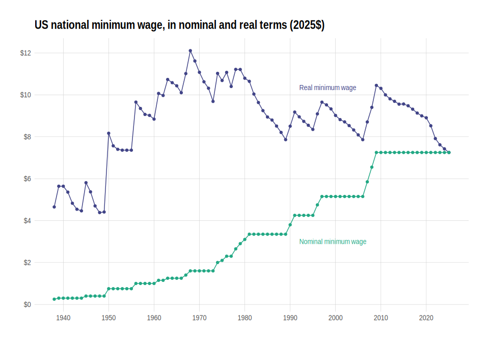

realtalk makes it easy to use common US price indexes in R.

Loading the data
realtalk is mostly a data package and includes several datasets of common US price indexes, like the CPI-U-RS:
library(realtalk)
cpi_u_rs_annual
#> # A tibble: 45 × 2
#> year cpi_u_rs
#> <dbl> <dbl>
#> 1 1978 104.
#> 2 1979 114.
#> 3 1980 127.
#> 4 1981 139.
#> 5 1982 148.
#> 6 1983 154.
#> 7 1984 160.
#> 8 1985 166.
#> 9 1986 168.
#> 10 1987 174.
#> # ℹ 35 more rowsYou can see what datasets are available by loading available_price_indexes:
available_price_indexes
#> # A tibble: 11 × 6
#> index_name frequency seasonal min_date max_date package_data_name
#> <chr> <chr> <chr> <chr> <chr> <chr>
#> 1 CPI-U annual <NA> 1937 2023 cpi_u_annual
#> 2 CPI-U monthly NSA Jan 1937 Apr 2023 cpi_u_monthly_nsa
#> 3 CPI-U monthly SA Jan 1947 Apr 2023 cpi_u_monthly_sa
#> 4 CPI-U-RS annual <NA> 1978 2022 cpi_u_rs_annual
#> 5 CPI-U-RS monthly NSA Dec 1977 Dec 2022 cpi_u_rs_monthly_nsa
#> 6 CPI-U-RS, extended annual <NA> 1937 2022 cpi_u_rs_extended_an…
#> 7 CPI-U-RS, extended monthly NSA Jan 1937 Apr 2023 cpi_u_rs_extended_mo…
#> 8 CPI-U-X1 annual <NA> 1967 1982 cpi_u_x1_annual
#> 9 CPI-U-X1 monthly NSA Jan 1967 Dec 1982 cpi_u_x1_monthly_nsa
#> 10 PCE annual <NA> 1929 2022 pce_annual
#> 11 PCE monthly SA Jan 1959 Apr 2023 pce_monthly_saThe package_data_name column contains the internal name of each dataset:
pce_monthly_sa
#> # A tibble: 772 × 3
#> year month pce
#> <dbl> <dbl> <dbl>
#> 1 1959 1 16.0
#> 2 1959 2 16.1
#> 3 1959 3 16.1
#> 4 1959 4 16.1
#> 5 1959 5 16.1
#> 6 1959 6 16.2
#> 7 1959 7 16.2
#> 8 1959 8 16.2
#> 9 1959 9 16.3
#> 10 1959 10 16.3
#> # ℹ 762 more rowsYou can also use get_price_index():
get_price_index("PCE", "monthly", "SA")
#> # A tibble: 772 × 3
#> year month pce
#> <dbl> <dbl> <dbl>
#> 1 1959 1 16.0
#> 2 1959 2 16.1
#> 3 1959 3 16.1
#> 4 1959 4 16.1
#> 5 1959 5 16.1
#> 6 1959 6 16.2
#> 7 1959 7 16.2
#> 8 1959 8 16.2
#> 9 1959 9 16.3
#> 10 1959 10 16.3
#> # ℹ 762 more rows